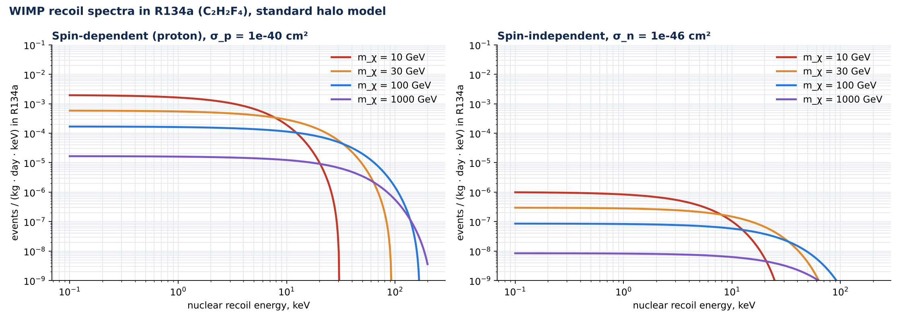
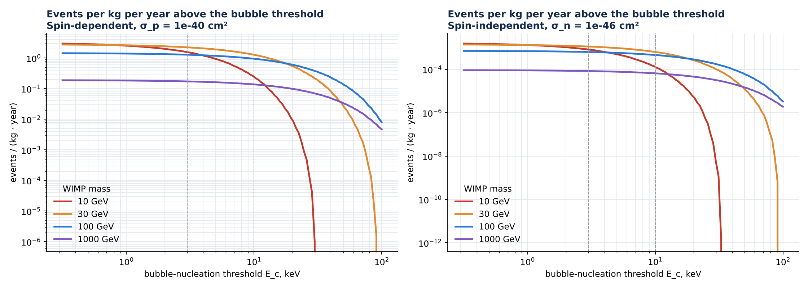
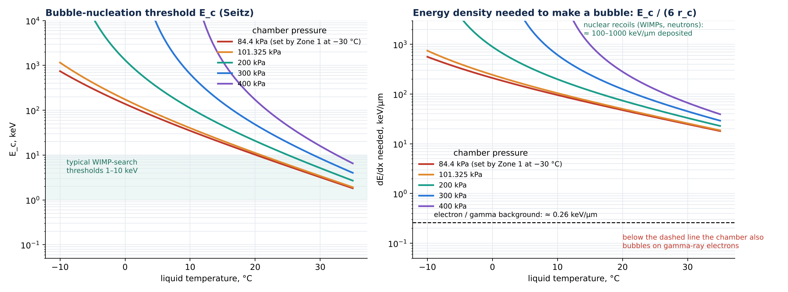
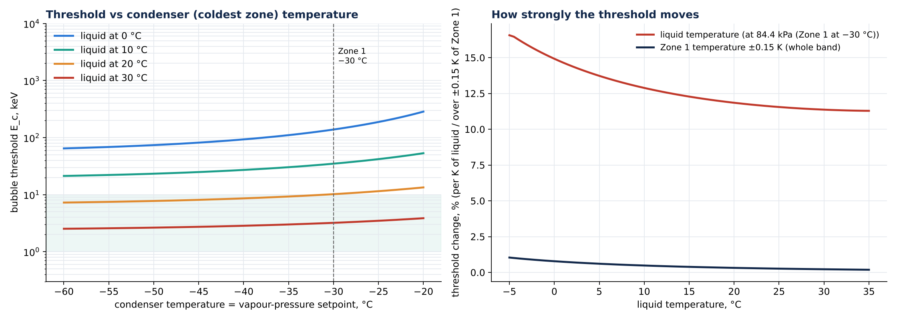

What the cold stage is for, how a superheated-R134a chamber detects dark-matter WIMPs, the signal it would see, and what that requires of the chamber.
7 Oct 2026 · properties: CoolProp reference equation of state for R134a · halo: standard halo model
The cold zones set the vapour pressure above a superheated R134a liquid. A WIMP hitting a fluorine nucleus leaves a few-keV recoil; above the bubble threshold this grows into a visible bubble, whose vapour then condenses at the −30 °C zone and resets the chamber.
1 · What the chamber is
1 Superheated liquidR134a liquid in the lower chamber, warmer than its boiling point at the chamber pressure. It stays liquid (metastable) until something deposits energy.
2 Particle hitA WIMP (or neutron) scatters on a nucleus, which recoils with a few to ~100 keV and stops within ~0.05 µm.
3 BubbleIf that energy exceeds the threshold Ec within the critical radius rc, a bubble forms and grows to mm size. Cameras and acoustic sensors record it.
4 Vapour risesThe bubble's vapour rises through the bore. The liquid supplies its latent heat (13 mJ for a 1 mm bubble).
5 Condense, resetThe −30 °C Zone 1 condenses the vapour back to liquid and holds the vapour pressure at 84.4 kPa. The −15 °C Zone 2 grades the temperature between them.
This is the principle of the PICO / COUPP dark-matter bubble chambers (C3F8, CF3I) and of the vapour-condensing "geyser" designs. The cold zones are the pressure reference and the condenser, which is why their temperature is held to ±0.15 K.
2 · Why R134a (C2H2F4) is a WIMP target
Nucleus
Atoms per molecule
Mass fraction
Spin
Sensitivity
¹⁹F
4
74.5 %
1/2, ⟨Sp⟩ = 0.441
spin-dependent WIMP–proton coupling: the strongest of any common target nucleus
¹H
2
2.0 %
1/2, ⟨Sp⟩ = 0.5
spin-dependent, light WIMPs (small mass fraction)
¹²C
2
23.5 %
0
spin-independent only (weak, A = 12)
Fluorine-rich superheated liquids lead the world in sensitivity to spin-dependent WIMP–proton scattering. R134a carries almost as much fluorine per kilogram as C3F8 (74.5 % against 81 %).
3 · The signal a WIMP leaves

Recoil spectra in R134a for four WIMP masses. ρχ = 0.3 GeV/cm³, v0 = 220 km/s, vE = 232 km/s, vesc = 544 km/s. Spin-dependent from ¹⁹F and ¹H; spin-independent from all three nuclei.

Expected events per kg per year above the bubble threshold. Dashed: 3 and 10 keV.
WIMP mass
Ec = 3 keV
Ec = 10 keV
Ec = 20 keV
10 GeV
1.6
0.25
0.01
30 GeV
2.2
1.3
0.54
100 GeV
1.3
0.95
0.60
1000 GeV
0.17
0.14
0.10
Reading. Spin-dependent events per kg of R134a per year at σp = 10⁻⁴⁰ cm². Current limits are about 3 × 10⁻⁴¹ cm², so a real signal is ≲ 1 event per kg per year. Light WIMPs (≤ 10 GeV) need a threshold of 3 keV or lower. A dark-matter search needs tens to hundreds of kg-years, deep underground, with neutron shielding.
4 · Setting the threshold: liquid temperature and pressure

Left: Seitz threshold Ec = 4πrc²(σ − T∂σ/∂T) + (4/3)πrc³ρvhfg − (4/3)πrc³Δp with rc = 2σ/Δp. Right: the energy density needed (Ec over 6 rc) against what electrons from gamma rays deposit.
Liquid at
Superheat at 84.4 kPa
Critical radius
Threshold Ec
dE/dx needed
WIMP use
0 °C (ice bath)
30 K
110 nm
139 keV
211 keV/µm
too high: misses almost all WIMP recoils
10 °C
40 K
61 nm
35 keV
96 keV/µm
heavy WIMPs only
20 °C
50 K
36 nm
10 keV
48 keV/µm
usable, ≥ 30 GeV
30 °C
60 K
22 nm
3.2 keV
25 keV/µm
good, down to ~10 GeV
Gamma blindness. Electrons from gamma rays deposit about 0.26 keV/µm, 100–1000 times less than the energy density needed above. Nuclear recoils deposit 100–1000 keV/µm. Over this whole range the chamber bubbles on WIMPs and neutrons but stays blind to the gamma background. This is the main strength of a bubble chamber.
5 · What it means for the cold stage

Left: threshold against the condenser temperature, which sets the vapour pressure, for four liquid temperatures. Right: how strongly the threshold moves with the liquid temperature (per K) and over the ±0.15 K band of Zone 1.
The liquid must be warm, not at 0 °C. With the liquid at 0 °C the threshold cannot fall below 65 keV even with a −60 °C condenser (139 keV at −30 °C). For a WIMP search the liquid should sit at about 20–30 °C (10–3 keV) with the condenser at −30 °C.
Zone 1 sets the pressure. At −30 °C the R134a vapour pressure rises 4.0 kPa per K. The ±0.15 K band holds it within ±0.6 kPa, which moves the threshold by only 0.2–0.8 %. The ±0.15 K requirement is therefore more than enough for threshold stability.
The liquid temperature is the sensitive control. The threshold changes by 11–15 % per K of liquid temperature, so the liquid needs a stability of about ±0.1 K to hold the threshold to ±1–2 %.
Bubbles hardly load the condenser. A 1 mm bubble returns 13 mJ to Zone 1 when it condenses. Even one event per second would add 0.013 W against the 2.7 W conduction load.
The steady load is the liquid surface. The liquid–vapour surface sits at the saturation temperature (−30 °C at 84.4 kPa). Warm liquid below it drives a continuous evaporate-and-condense loop that Zone 1 must absorb. Its size depends on the lower chamber's shape and the liquid level.
6 · To build the full chamber model
Needed. The lower chamber geometry (cone/reservoir shape, wall material and thickness), the liquid level, the liquid temperature control (bath at 20–30 °C or ice bath), and whether the pressure is set only by Zone 1. With these, the chamber heat model and the 3-D vapour column extend through the liquid. That gives the steady evaporation load on Zone 1, the temperature field of the liquid (hence the threshold map across the active volume), and the transient after a bubble.